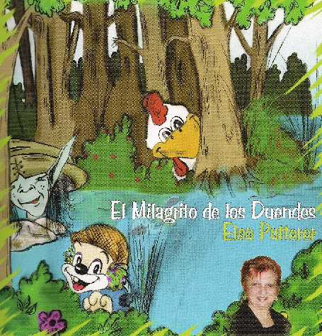
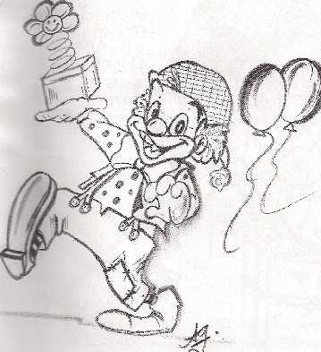
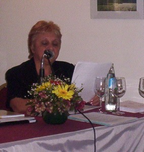

La mirada en la distancia...
| Autor: ELSA PATTERER (Argentina) |
¡Nuevo! Su obra "El milagrito de los Duendes"
Su obra "El milagrito de los Duendes"
Cuentos para leer, contar y colorear...
 |
 |
|---|
|
Recordando los cuentos leídos, quise hacerte partícipe de algunos, a mi manera; cada uno marcó etapas en mi corazón…Para que Mamá, Papá o la Abuela te lo lean…
Un duende picarón corría tras de un ratón… El payaso Tolón del trapecio cayó…
La gallina Rueca camina chueca… El chanchito Barrigón se fue de paseo… El gato remolón se fue a dormir… Adivinanzas...
Elsa Patterer, es el vivo ejemplo de lo que expreso y a modo de confidencia (no lo digo en voz alta) todo esto, me lo contó mi amigo Duende Juanka Wi. (Raúl Lelli)
Patterer, Elsa Teodora 1. Narrativa Infanil Argentina. I. Título CDD A863.9281 Pedidos a e-mail: gordita23951@hotmail.com
|
Algunos anteriores
 Sigo
apostando al amor
Sigo
apostando al amor
Abracé mi sonrisa entre lágrimas,,
escondí mi ira cerrando los puños
ya no siento mis caídas, ni mi dolor
aprendí a ser cobarde, a pesar de mi valentía.
Fui aceptando que mis años llegaban,
y junto a ellos muchas cosas se alejaban,
habité mis ilusiones,
e hice que mis sueños se cumplieran.
Dejé el pasado en el camino,
viví el presente a pesar de mis angustias,
los años se volaron,
mi lucha fue terminando, y a pesar de todo,
sigo cantándole a la vida
sigo apostando al amor.
 GRACIAS
AMOR.
GRACIAS
AMOR.
Cómo poder… vivir sin decirte cuánto te amo.
Cómo poder… sacar de mis oídos las dulces palabras que
me susurras, cuando hacemos el amor.
Cómo poder… vivir sin tus manos acariciando mi cuerpo.
Cómo poder… vivir sin ver tus ojos llenos de amor, cuando me
miras al estar frente a frente, amándonos.
Cómo poder… decirte cuánto te amo vida mía, amor
de mis días alegres.
Cómo hacer… que mi corazón deje de latir intensamente,
cuando estás junto a mí.
Cómo decirte… que la vida me premió dándome tu
llegada, para darme ese amor enceguecido, amor de horas y días totalmente
nuestros.
Cómo poder… vivir sin tus besos, besos ardientes,
besos con aroma a frescura de la mañana.
Cómo dejar… de sentir el aire fresco penetrando en mi corazón
y decirte…
cuánto te amo vida mía!
Que sos el reflejo de ese sol,
que día a día me invita a contemplarlo dentro de esos bellos
matices dorados.
Cómo hacer… para que permanezcas infinitamente en mi vida,
que nada quite este amor, que nadie quiera torcer nuestro destino,
que somos uno solo los dos; llenos de fantasías, plenos de felicidad.
Cómo hacer… para demostrar que eres la razón de mi existir...
 DICE
EL PERIÓDICO HOY...
DICE
EL PERIÓDICO HOY...
Dice el periódico de hoy….
"Un indigente muere de frío". Entonces, pensé…
En este país, donde todo brilla, donde hay gente
con mucho poder y dinero, como puede haber
humanos en las calles, con hambre, solos, marginados.
Será acaso que la vida no les dio una oportunidad,
o quizás la dejaron pasar?
Dice el periódico de hoy…
"Hace 31 años que las Madres de Plaza de Mayo.
salen a la calle a buscar lo que un día les arrebataron,
sus hijos, sus maridos, sus nietos,
y hasta su propia identidad". Entonces pensé..
en este País lleno de personas que con sus manos sobre
la Santa Biblia, juran protección, seguridad,
paz y trabajo, no sepan lo que es un juramento?
Dice el periódico de hoy…
"Sigue la guerra en el Líbano, en el Medio Oriente,
muchas personas han desparecido de entre los escombros,
Entre ellos, mujeres, pequeños, ancianos..."
y seguí pensando:
¿Hasta cuándo pisotearán a la humanidad? ,
¿Hasta cuándo los hombres dejarán de pensar en lo material.
y darán prioridad a lo humano.?
¿Cuando podremos soltar palomas y crucen las fronteras
anunciando PAZ en el mundo?
¿Cuando podremos hacer flamear la blanca bandera de la
PAZ?…..
ESTO SE LO ESCRIBI A MI AMIGA LEAL.
HOY EN TU DIA.
Todos los días son tuyos, querida Gretta,
Pero hoy es uno especial, es 29 de abril.
. . .
 A
Gretta...
A
Gretta...
Quiero definirte en mi vida.
Llegaste en el momento justo de una depresión;
no sabes hablar pero nos entendemos ,
algo fluía entre nosotras, y era mutuo.
Tus orejitas atenta a todos mis movimientos,
cuatro patitas dispuestas a saludarme todas
las mañanas, comprendiendo nuestros estados
de ánimos.
Hocico frío y mojado, ese que cuando se acerca
a mi rostro lo siento, porque fluye tu cariño, y
tu agradecimiento.
Uyyyyyy….sales corriendo, buscas refugio, ya
estoy sabiendo que viene tormenta, los cohetes
te anulan y buscas refugio debajo de la cama,
trato de hablarte y decirte que son cosas de la
Señora Naturaleza, pero no me entiendes.
Saboreas los huesitos que hoy te regale,
mueves tu pequeño rabito agradeciéndome,
pero yo soy la agradecida, hoy, mañana y siempre,
Estas ciega, lloramos las dos cuando te dieron el
diagnóstico, pero te dije…no importa... si con el
correr de los años no me veas, yo estaré siempre a tu lado,
te mimaré, y mis ojos serán los que te guíen.
Se que no sabes leer, pero si comprender
hoy…yo…quien adoptaste por MAMA,
te leerá lo que escribí, con tanto amor y
especialmente para ti.
Gracias amiga, por todo lo que me has enseñado
durante estos nueve años juntas…¡ FELIZ DIA GRETTA!
. . .
 REGINA.
REGINA.
De niña a mujer.
Guardo tu inocencia en el cofre del tiempo,
ese tiempo que me regalaste junto a tu cariño,
y me hiciste inmensamente feliz.
Convertida en adolescente, emprendiste un camino
lleno de sueños, yo sigo recordando tu carita de
bebé, que dio vida a mis días, y vos lo sabes.
Ojitos que destellan estrellas,
tienen un brillo único, será acaso que
el corazoncito ya late por un galancito.
Franca, sincera, risueña, bondadosa,
sos orgullo de mamá,
y de esta tía que te vio nacer y crecer.
Tu sonrisa, nos hace olvidar que los años pasaron,
pero seguirás siendo nuestra REGINA, que nos
regala tantas alegrías, y camina muy feliz por la vida.
ESTO ES PARA UNA DE MIS HIJITAS DEL CORAZON, QUE LA AMO
COMO AMO A MIS HIJAS..TIENE 13 AÑOS Y SE LLAMA REGINA
. . . .
 SER
SENCILLAMENTE, YO.
SER
SENCILLAMENTE, YO.
Me impuse metas, aún sin importarme
los comentarios negativos que recibiría,
ni de quienes vinieran.
Quería ser ejemplo de mi familia, ser quien
llevara adelante mi hogar, que mis fuerzas no
me abandonaran, que fuera temperamental,
quería ser… Sencillamente…yo…
Quería tener garras como el león,
para defender a mis afectos, volar como
el águila y transportar a todos los que amo.
Quería ser estrella, para iluminar el camino
de los que se habían quedado sin luz.
Me decidí a vivir, saboreando las horas,
saboreando al amor, sabiendo que todos los días
hay algo nuevo para empezar.
Me convertí sin esperarlo, en sol, luna, hadas,
mar, cielo, estrellas y especialmente en ser ….
una persona feliz.
Cierro mi cofre del tiempo guardo en el
la niña que fue , y dejo que en alas de un ángel
vuele el corazón de una mujer.
 |
Soy Elsa Teodora Patterer, 56 años; casada, dos
hijas. En los años 2005 y 2007 salí semifinalista
en el CENTRO POETICO DE MADRID... También, en el 2005,obtuve
mención especial por el jurado de Venado Tuerto, con un poema
para la MADRE. .... Mi Gretta, es una rotweiller con quien nos amamos mutuamente.
En este momento está prácticamente ciega, y no quiero
pensar mi vida sin ella... |
Reservados todos los derechos.
Musicalización: 1_tony_carreira_tu_levaste_a_minha_vida